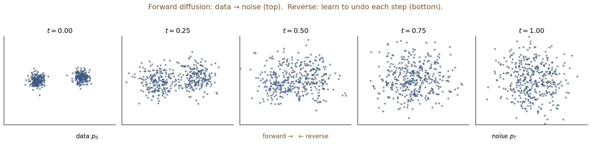
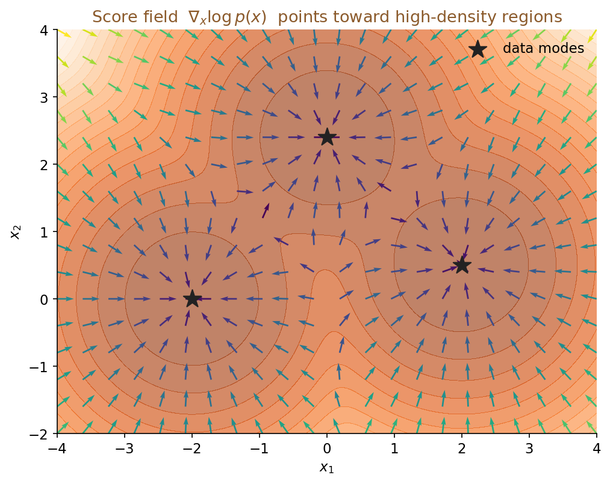
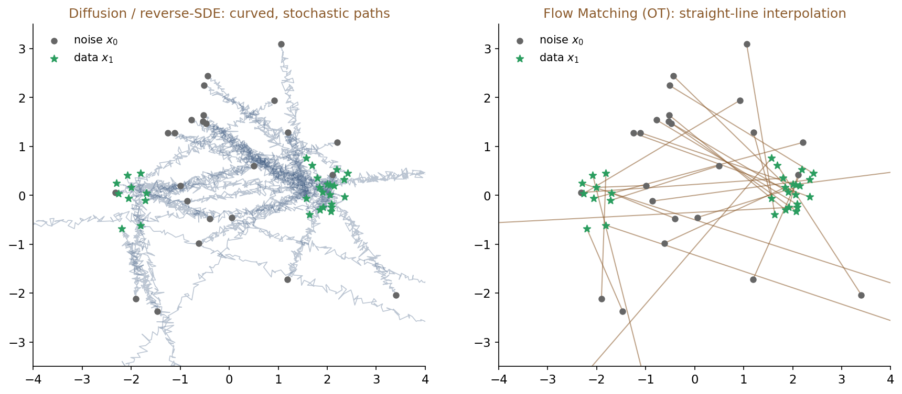
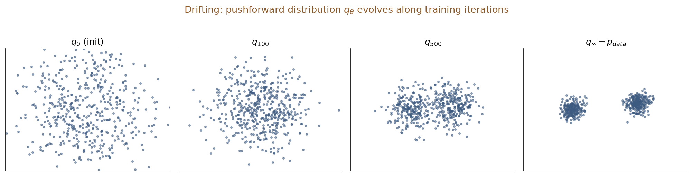
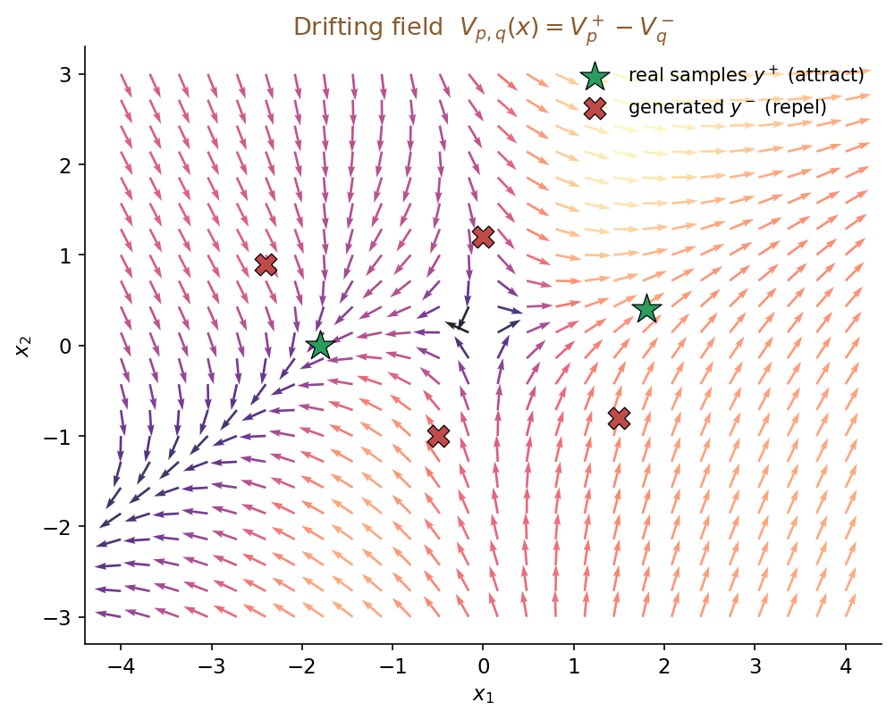
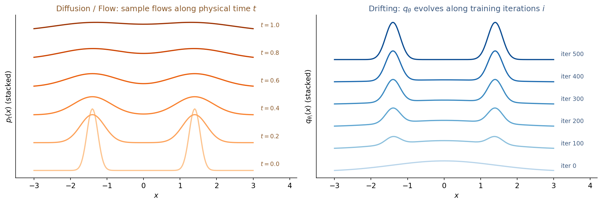
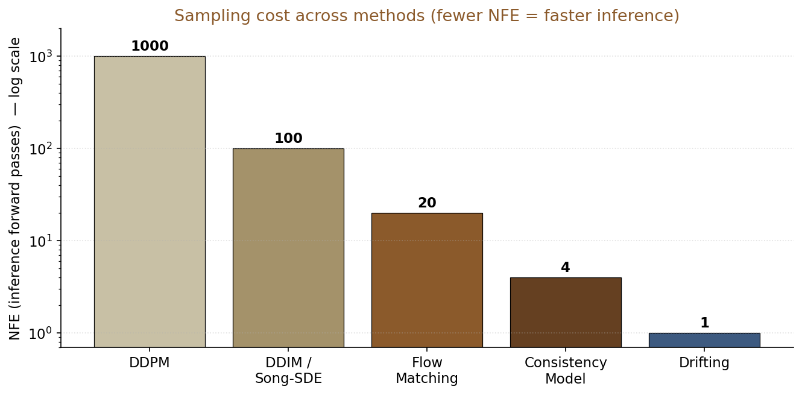

生成模型综述与 Drifting
从加噪-去噪到 SDE，从 SDE 到 Flow，再到一步生成
Yang · 7.23 · 汇报
用 ← / → 或点击底部箭头翻页
1 / 19
今天讲什么
目标：把 Drifting 讲透，顺带把它站在什么肩膀上讲清
Part I · 生成模型是什么（约 7 分钟）
- 用一个具体例子讲清"分布"这件事
- Diffusion / Flow 系的统一图景 + "为什么加噪-去噪能行"的直觉
- 关键概念 1：score 是啥（一根指向数据的箭头）
Part II · 主线四部曲（约 10 分钟）
- DDPM & NCSN — 离散加噪-去噪
- Song 2021 — SDE 与 probability flow ODE
- Flow Matching — velocity 视角，OT 直线路径
- CFG — 条件生成的通用配件
- 关键概念 2：pushforward 分布（进入 Drifting 的桥梁）
Part III · Drifting Model（约 13 分钟，重点）
- 核心视角切换：训练时演化 pushforward 分布
- Drifting field + fixed-point loss + kernel 实例化
- 与前面 5 篇的位置关系
- 开放问题（identifiability / 连续极限 / few-step 拓展）
2 / 19
生成模型到底在干什么
任务：给一堆样本 $x_1, \dots, x_N \sim p_{\text{data}}$，构造一个可采样的模型 $p_\theta$ 使 $p_\theta \approx p_{\text{data}}$。
两大流派
- 显式：写出（对数）似然，如 VAE、Normalizing Flow、Diffusion。
- 隐式：只给采样器，不写似然，如 GAN。
三种可能被拟合的对象
- 密度 $p_\theta(x)$ 本身
- score $\nabla_x \log p_\theta(x)$
- 把噪声推到数据的映射 $x = f_\theta(\epsilon)$
为什么这几年"新"
- GAN 稳定性差、mode collapse
- VAE / NF 表达能力受结构限制
- Diffusion / Flow 通过逐步加噪-去噪把问题拆成一族简单的条件回归
- Drifting 更进一步：把"逐步"塞进训练动态里，推理时只跑一次
3 / 19
先把"生成"这件事讲具体
一个具体例子：ImageNet 256×256 的猫图
- 一张 $256\times 256$ 彩色图 = $\mathbb{R}^{256\times 256\times 3} \approx \mathbb{R}^{200{,}000}$ 里的一个点。
- "猫的分布" $p_{\text{data}}$ = 所有猫图对应的点，在这个 20 万维空间里挤在极薄的流形上（换句话说，"随手写的 20 万维向量"几乎 100% 不像猫）。
- 生成模型的任务：从这个流形上再采样出新点（新猫图，训练集里没见过）。
难点
- 直接写出 20 万维密度 $p_\theta(x)$ 几乎不可能（"维度灾难"）。
- 直接从 $p_{\text{data}}$ 采样也不可能——我们只有有限张训练图。
现代做法（Diffusion / Flow / Drifting）：
不学密度，而学一个"从简单分布（高斯）出发把点搬到猫流形上"的路径或映射。
采样 = 跑这条路径 / 调用这个映射。所有六篇论文都在做这件事，区别在"怎么定义、怎么学、怎么跑"。
4 / 19
Diffusion / Flow 系的通用框架
核心思想
选一条概率路径 $\{p_t\}_{t\in[0,1]}$，$p_0$ 是简单先验（$\mathcal{N}(0,I)$），$p_1 = p_{\text{data}}$。
不直接学 $p_{\text{data}}$，而是学一个刻画 $p_t$ 如何演化的"矢量场"，用它反向从 $p_0$ 生成到 $p_1$。
三种"矢量场"化身
| 名字 | 定义 | 典型代表 |
|---|
| Score | $s(x,t) = \nabla_x \log p_t(x)$ | NCSN, DDPM, Song 2021 |
| Velocity | $v(x,t) = f(x,t) - \tfrac12 g(t)^2 s(x,t)$ | PF-ODE, Flow Matching |
| Drifting field | $V_{p,q}(x)$（分布之间的场） | Drifting (2026) |
关键区别：前两者依赖时间——沿 $t$ 演化样本；
最后一个不用时间——沿训练迭代演化分布。
5 / 19
直觉：为什么"加噪-去噪"能生成？
物理类比
把训练集里的每张图想象成一颗糖粒。往一杯水里放糖，糖慢慢扩散，最后整杯均匀 —— 这就是 forward 过程（加噪）。
如果能"倒放"整个扩散过程，就能从"均匀糖水"里重现出原来那些糖粒。生成模型就是学"倒放"。

2D 数据（两团点）沿 forward diffusion 逐步扩散到高斯；reverse 就是把这排图从右往左"复原"。
为什么这比直接学 $p_{\text{data}}$ 好？
- 直接学 $p_{\text{data}}$：分布锐利、在薄流形上，梯度不好用。
- 每个中间 $p_t$ 都是被高斯"糊"过的数据分布，处处光滑、有定义良好的 $\nabla\log p_t$。
- 学 $\nabla \log p_t$（score）比学 $\log p_t$ 简单得多：只用 MSE 回归噪声就够了。
一句话：加噪把"难学的分布"变成"一族好学的分布"；去噪就是把这族分布反着走一遍。
6 / 19
关键概念 1：score 是啥？
定义
$$ s(x) := \nabla_x \log p(x) $$
对 $x$ 求偏导，得到一个和 $x$ 同维度的向量。
直觉：一根指向"数据密集处"的箭头
- $p(x)$ 大 $\Rightarrow \log p(x)$ 大 $\Rightarrow \nabla\log p(x)$ 指向更大的方向。
- 所以在任意点 $x$，$s(x)$ 就是朝"更像真实数据"方向的一根箭头。

在一个 3-mode 高斯混合上画出的 score 场——箭头处处指向密度高的地方（星号 = 数据模式）。
Langevin：沿箭头走，就能采到数据
$$ x \leftarrow x + \tfrac{\eta}{2}\,s(x) + \sqrt{\eta}\,z,\quad z\sim\mathcal{N}(0,I) $$
"往密度更大的方向挪一小步 + 加一点点噪声防止陷在一处" —— 反复迭代就能采出符合 $p$ 的样本。
关键洞察：不需要知道 $p(x)$ 的值，只需要知道它的梯度方向。NCSN/DDPM/Song 全都在学这根箭头。
7 / 19
DDPM · 离散加噪-去噪
Ho, Jain, Abbeel 2020
Forward（加噪，无学习参数）
$$ q(x_t\mid x_{t-1}) = \mathcal{N}(\sqrt{1-\beta_t}\,x_{t-1},\,\beta_t I) $$
读作：每步把图缩一点点（乘 $\sqrt{1-\beta_t}<1$）+ 加一点高斯噪声。$\beta_t$ 是提前定好的很小的数（如 $10^{-4}\!\to\!0.02$）。
令 $\bar\alpha_t = \prod_{s\le t}(1-\beta_s)$，有闭式边缘：
$$ x_t = \sqrt{\bar\alpha_t}\,x_0 + \sqrt{1-\bar\alpha_t}\,\varepsilon,\quad \varepsilon\sim\mathcal{N}(0,I) $$
好处：不用真的迭代 1000 次，任何 $x_t$ 一步到位就能采出来。训练时直接采就行。
Reverse（去噪，学习）
用一个 U-Net 预测噪声 $\varepsilon_\theta(x_t, t)$，训练目标极简：
$$ L_{\text{simple}} = \mathbb{E}_{t, x_0, \varepsilon}\bigl\|\varepsilon - \varepsilon_\theta(x_t, t)\bigr\|^2 $$
给网络看一张加过噪的图 + 时间步 $t$，让它猜"我加了什么噪声"。就这么简单——一个 MSE。
推理
从 $x_T\sim\mathcal{N}(0,I)$ 一步步倒推到 $x_0$，$T$ 通常为 1000 步。
核心洞察：把"生成一张图"拆成 1000 个「去掉一点噪声」的小任务；每个小任务都是简单的 Gaussian 回归。
训练/采样具体在干嘛（用一张猫图）
- 训练：取一张猫 $x_0$，随机选一个噪声等级 $t\in\{1,\dots,1000\}$，加对应量的高斯噪声得到 $x_t$，让网络看着 $x_t$ 猜"我加了多少噪声" $\varepsilon$。
- 采样：$x_{1000}$ 直接从 $\mathcal{N}(0,I)$ 采，网络预测噪声 → 减去一点得到 $x_{999}$ → 循环 1000 次 → $x_0$ 是一张全新的猫。
8 / 19
Song 2021 · 连续化 → SDE
Score-Based Generative Modeling through SDEs
为什么要连续化？ DDPM 的 1000 步是"离散台阶"；把台阶数 $T\to\infty$、步长 $\to 0$，台阶就变成一条连续曲线。所有中间步骤都可以用一条 SDE 一次性描述——理论更干净，可用现成的 ODE/SDE 求解器（Euler, Heun, RK4）来加速采样。
Forward SDE
$$ dx = f(x,t)\,dt + g(t)\,dW,\quad t \in [0,T] $$
$f\,dt$：确定性漂移项；$g\,dW$：布朗运动增量，就是"每一瞬间加一点点高斯噪声"。
Reverse-time SDE（Anderson 1982）
$$ dx = \bigl[f(x,t) - g(t)^2\,\nabla_x\log p_t(x)\bigr]\,dt + g(t)\,d\bar W $$
只要拿到 score $s_\theta \approx \nabla_x\log p_t$，反向 drift 就完全确定。
拆开看：原 drift $f$ 反着走，同时被 score 项推向数据流形；随机项换成反向布朗运动 $d\bar W$。
Probability flow ODE（同边缘、无随机）
$$ dx = \bigl[f(x,t) - \tfrac12 g(t)^2\,s(x,t)\bigr]\,dt $$
一次把 DDPM 与 NCSN 装进同一框架
- VP-SDE（$f = -\tfrac12\beta x, g=\sqrt\beta$）$\Leftrightarrow$ DDPM
- VE-SDE（$f=0, g$ 增长）$\Leftrightarrow$ NCSN
PF-ODE 的三大用途
- 少步、确定性采样
- 精确 log-likelihood
- 为 Flow Matching 铺桥
9 / 19
Flow Matching · velocity 视角
Lipman et al. 2023
换个视角
不再学 score，直接学能把 $p_0$ 传到 $p_1$ 的 velocity $v_\theta(x, t)$：
$$ \frac{dx}{dt} = v_\theta(x, t) $$
关键难点与解法
- 难点：真实 velocity $u_t(x)$ 和 $p_t(x)$ 都未知。
- 解法：先条件化 $u_t(x\mid z)$，MSE 回归它，梯度上等价于回归边缘 $u_t(x)$。
$$ \mathcal{L}_{\text{CFM}}(\theta) = \mathbb{E}_{t, z, x\sim p_t(\cdot\mid z)}\bigl\|v_\theta(x, t) - u_t(x\mid z)\bigr\|^2 $$
OT（直线）路径极简形式
取 $x_t = t x_1 + (1-t) x_0$，$x_0\sim\mathcal{N}(0,I),\ x_1\sim p_{\text{data}}$：
$$ u_t(x_t\mid x_1) = x_1 - x_0 $$

左：diffusion / reverse-SDE 的样本轨迹弯曲带抖动。右：Flow Matching 用直线插值，网络学到的 velocity 就是常向量。
直觉：diffusion 走的是弯路（先扩散再往回聚），FM-OT 直接直线插值噪声到数据。网络学的"速度"就是"从起点直冲终点的常向量"。
整个训练目标就一行：$\|v_\theta(x_t, t) - (x_1 - x_0)\|^2$。采样只需 5–20 步 ODE。
10 / 19
CFG · 条件生成的通用配件
Ho & Salimans 2022
训练
共享一个网络 $\varepsilon_\theta(x_t, t, y)$，训练时以 $p_{\text{uncond}}$（通常 10–20%）概率把 $y$ 换成空标记 $\emptyset$。
直观：让同一个网络同时学"看着 prompt 生成"和"什么都没看到瞎生成"两件事——只是同一网络的两种输入模式。
推理组合
$$ \tilde\varepsilon = \varepsilon_\theta(x_t, t, \emptyset) + s\bigl(\varepsilon_\theta(x_t, t, y) - \varepsilon_\theta(x_t, t, \emptyset)\bigr) $$
隐式实现了目标分布
$$ \tilde p_t(x\mid y) \propto p_t(x)\,p_t(y\mid x)^s $$
$s$ 直观理解：$s=1$ 就是正常条件生成；$s>1$（比如 7.5）相当于告诉模型"放大条件的影响"——生成的猫更像"典型猫"、更贴 prompt，但多样性降低；$s=0$ 完全不看条件。
相对 Classifier Guidance 的优势
- 不需要单独训分类器 $p_\phi(y\mid x_t)$
- $s$ 可任意选而无需重训
缺点
- 推理时每步两次前向 (~2× NFE)
- $s$ 大时模式塌缩
这个 idea 在 Drifting 里以另一形式重新出现 —— 用负样本分布的 mixture 实现，训练时行为，保持 1-NFE。
11 / 19
关键概念 2：pushforward 分布是啥？
定义（直接翻译成代码）
有网络 $f_\theta : \mathbb{R}^C \to \mathbb{R}^D$，输入噪声 $\epsilon \sim \mathcal{N}(0, I)$。
$$ q_\theta = f_{\theta\#}\,p_\epsilon \;\;\Longleftrightarrow\;\; \text{"采一堆 }\epsilon\text{，喂进 }f_\theta\text{，输出的图像分布"} $$
ε₁, ε₂, ε₃, ε₄ ──▶ f_θ ──▶ x₁, x₂, x₃, x₄
↑ ↑
p_ε = 𝒩(0, I) q_θ ← 这就是 pushforward
为什么这个概念在 Drifting 里特别重要
- diffusion / FM 里，"当前分布" $p_t$ 是加噪核决定的——训练迭代到哪一步都不变。
- Drifting 里，"当前分布" $q_\theta$ 是生成器自己吐出来的——网络参数一变，$q_\theta$ 就变。
- 所以"分布沿训练迭代演化" = "$\theta$ 每更新一次，$q_\theta$ 就动一次"。
类比：$\theta$ 是一个"发牌机"的按钮，$q_\theta$ 就是"这台发牌机吐出的牌的分布"。训练 = 调按钮，让吐出的牌越来越像真牌。
12 / 19
Drifting Model · 视角切换
Deng, Li, Li, Du, He (MIT + Harvard) 2026 — 主线论文
之前的所有工作
在推理时，让样本沿一条路径（SDE / ODE）从噪声演化到数据。
x_T (noise) ──[t=T→0]──▶ x_0 (data) 需多步
Drifting 的想法
把演化塞进训练：让"生成器输出的分布 $q_i$"沿训练迭代 $i$ 演化到 $p_{\text{data}}$；推理时只跑一次 $f_\theta(\epsilon)$。

生成器输出的分布 $q_\theta$ 随训练迭代由高斯逐步逼近两团数据。
符号
- 生成器 $f_\theta : \mathbb{R}^C \to \mathbb{R}^D$，$x = f_\theta(\epsilon)$，$\epsilon\sim\mathcal{N}(0,I)$。
- Pushforward 分布 $q_\theta = f_{\theta\#}\,p_\epsilon$。
- 目标：训到 $q_\theta = p_{\text{data}}$，推理时单步。
1-NFE：Number of Function Evaluations = 1。一张 ImageNet 256×256 图，一次前向。
对比：DDPM ~1000 次；DDIM/Song 50–200；FM 5–20；Consistency Model 1–4；Drifting 1。
类比：diffusion 是"每次考试前复习一整年"，Drifting 是"每天都在潜移默化提升"
- Diffusion：模型每次生成时要沿路径走 1000 步，"每张图现算 1000 次去噪"。
- Drifting：训练时慢慢把生成器整体推向"能一次输出真图"，推理不需要中间步骤。
- 关键代价从 推理端 挪到了 训练端。
13 / 19
Drifting Model · 核心构造
Drifting field
训练迭代下样本的更新：
$$ x_{i+1} = x_i + V_{p, q_i}(x_i) $$
$V_{p,q}(x)$ 是一个依赖两个分布的向量场。
反对称性 ⇒ 均衡（Prop. 3.1）
若 $V_{p,q}(x) = -V_{q,p}(x)\ \forall x$，则
$$ q = p \;\Longrightarrow\; V_{p,q}(x) \equiv 0 $$
逆命题 $V\equiv 0 \Rightarrow q = p$ 对一般 field 不成立。附录 C.1 在 full support + 有限维基展开 + interaction vectors 线性独立下给出充分条件——是受限设定下的识别性论证，不是一般分布空间上的完整定理。
Kernel 实例化：吸引 − 排斥
$$ V_{p,q}(x) = \underbrace{\tfrac{1}{Z_p}\mathbb{E}_{y^+\sim p}[k(x,y^+)(y^+ - x)]}_{\text{被真实样本吸引}}
- \underbrace{\tfrac{1}{Z_q}\mathbb{E}_{y^-\sim q}[k(x,y^-)(y^- - x)]}_{\text{被生成样本排斥}} $$
Kernel 用 $k(x,y) = \exp(-\|x-y\|/\tau)$，softmax 化后与 InfoNCE 同构。
InfoNCE = 对比学习里最常用的损失（"和正样本近、和负样本远"）。所以 Drifting 也可以理解成：把对比学习的"拉近-推远"信号，直接变成生成器的更新方向。

星号=真实样本（吸引），X=生成样本（排斥）。箭头是合力 $V(x)$，把生成样本推向真实模式。
物理类比：真实样本 = 正电荷拉过去；同 batch 生成样本 = 负电荷推开。$q=p$ 时拉推完全抵消 $\Rightarrow V\equiv 0$。
14 / 19
Drifting Model · 训练目标
Fixed-point 视角
训练完成 $\Leftrightarrow$ 生成器满足 $f_{\hat\theta}(\epsilon) = f_{\hat\theta}(\epsilon) + V_{p,q_{\hat\theta}}(f_{\hat\theta}(\epsilon))$，即 $V = 0$。
直觉：让当前输出 $x$ 靠近"$x$ 应该被 drift 到的下一步位置" $x + V(x)$。当 drift 变成零，说明生成分布已经和真实分布对齐。
Loss（关键在 stop-gradient）
$$ \mathcal{L}(\theta) = \mathbb{E}_\epsilon\,\bigl\| f_\theta(\epsilon) - \mathrm{sg}\bigl[\,f_\theta(\epsilon) + V_{p,q_\theta}(f_\theta(\epsilon))\bigr]\bigr\|^2 $$
- 数值上 $= \mathbb{E}\|V(f_\theta(\epsilon))\|^2$，但 stop-grad 阻断了对 $V$ 内含 $q_\theta$ 的反传（穿过一个分布不好办）。
- target 每步随 $q_\theta$ 重新计算 → 更接近 fixed-point iteration；实际梯度不能直接解释为对 $\mathbb{E}\|V\|^2$ 做完整梯度下降。
- 结构与 SimSiam（Chen & He 2021）、Consistency Training（Song & Dhariwal 2023）同型。
为什么要 stop-grad？ $V$ 里含 $q_\theta$（依赖当前网络参数）；如果不加 sg，梯度会穿过整个 batch 的成对距离——既算不动也不稳定。sg 把 "target 是什么" 冻结成一个具体数值，训练变回熟悉的 MSE 回归。
特征空间 Drifting
像素空间直接算 kernel 高维下失效 → 搬到自监督 encoder $\phi$（如 MoCo）的表征空间：
$$ \mathcal{L}_\phi = \mathbb{E}\bigl\| \phi(x) - \mathrm{sg}\bigl[\phi(x) + V(\phi(x))\bigr]\bigr\|^2 $$
$\phi$ 只在训练时用，推理仍单次前向。多尺度多位置聚合以提升表现。
15 / 19
Drifting Model · CFG 与实验结果
训练时 CFG
用 mixture 负分布替换 $q$：
$$ \tilde q(\cdot\mid c) = (1-\gamma)\,q_\theta(\cdot\mid c) + \gamma\,p_{\text{data}}(\cdot\mid \emptyset) $$
要求 $\tilde q = p_{\text{data}}(\cdot\mid c)$ 解出
$$ q_\theta(\cdot\mid c) = \alpha\,p_{\text{data}}(\cdot\mid c) - (\alpha - 1)\,p_{\text{data}}(\cdot\mid \emptyset),\quad \alpha = \tfrac{1}{1-\gamma} $$
与 Ho & Salimans 2022 的 CFG 形式一致，但作为训练时行为；推理仍 1-NFE。
ImageNet 256×256 主要结果
| 方法 | NFE | FID |
|---|
| Diffusion (ADM-G) | 250 | 4.59 |
| Consistency Model | 1 | ~6 |
| Drifting (latent, SD-VAE) | 1 | 1.54 |
| Drifting (pixel) | 1 | 1.61 |
1-NFE SOTA：数字上超越了多步 diffusion 与已有的一步蒸馏模型。
关键消融 & 代价
- 破坏 attraction/repulsion 反对称结构 → 灾难性失败（与 Prop 3.1 一致）。
- 去掉特征 encoder $\phi$ → ImageNet 无法训成功；kernel 在原始像素空间近乎 flat。
- 1-NFE 推理不等于低训练成本：需大有效 batch、pretrained encoder、$O(B^2)$ 成对距离。
16 / 19
Drifting vs 前面 5 篇 · 一图对齐
| 维度 | Diffusion / Song 2021 | Flow Matching | Drifting |
| 什么在演化 |
样本沿物理时间 $t$ |
样本沿 ODE 时间 $t$ |
pushforward 分布沿训练迭代 $i$ |
| 矢量场 |
Score $\nabla_x\log p_t$ |
Velocity $v_t(x)$ |
Drifting field $V_{p,q}$ |
| 训练目标 |
Denoising Score Matching |
Conditional FM (MSE) |
Fixed-point MSE + stop-grad |
| 推理 NFE |
50–1000 |
5–100 |
1 |
| 是否显式经过中间 $t$ |
是 |
是 |
否 |
| 均衡条件 |
$s_\theta \to \nabla\log p_t$（点态） |
$v_\theta \to u_t$（点态） |
$V = 0$（分布态） |

最短的一句概括：
前面所有工作学"路径"，Drifting 直接学"从起点到终点的映射"，用分布对比作为唯一监督。
17 / 19
开放问题与后续方向
理论侧
- Identifiability：$V\equiv 0 \Rightarrow q = p$ 目前只有 heuristic。能否在 characteristic kernel + universal approximator 假设下证清？—— 类比 kernel MMD 的 characteristic kernel 定理。
- 连续极限：SGD 步长 $\eta\to 0$ 时，$q_\tau$ 是否满足
$\partial_\tau q + \nabla\cdot(q\,V) = 0$？若成立，$V$ 就是某泛函的 $W_2$ 梯度 —— 与 Song 2021 的 PF-ODE 构成物理时间 vs 训练时间的对偶。
方法侧
- Few-step Drifting：从严格 1-NFE 拓展到 $K$ 层级 $V^{(k)}$，介于 Drifting 与 Flow Matching 之间。
- Off-policy 负样本：MoCo 式 EMA 生成器提供 $y^-$，作 bias-variance 分析。
- 其他 kernel：Stein / Wasserstein gradient flow 视角下选更结构化的 $V$。
接下来一周的计划：Q1（identifiability）在 Gaussian mixture 特例上先证草稿；同步跟老师约定 Q2 的可行边界。
18 / 19
Take-aways
- 生成模型 = 学一个能把简单分布推到数据分布的对象。可以是密度、score、velocity，或者"直接一步的映射"。
- Diffusion / Flow 的统一图景：选一条 $\{p_t\}_{t\in[0,1]}$，学 score 或 velocity；Song 2021 把 DDPM、NCSN 统一进 SDE；Flow Matching 用 ODE 视角 + 更短路径。
- Drifting 是一次视角切换：从"推理时演化样本"改成"训练时演化分布"，天然 1-NFE。技术核心是反对称 drifting field + stop-grad fixed-point loss。
- ImageNet 256×256 单步 FID 1.54 (latent) / 1.61 (pixel)。

- 最脆的地方是 identifiability（$V=0 \Rightarrow q=p$）—— 也是最值得做下去的地方。
参考文献
- Song & Ermon 2019. NCSN.
- Ho, Jain, Abbeel 2020. DDPM.
- Song et al. 2021. Score-Based Generative Modeling through SDEs.
- Lipman et al. 2023. Flow Matching for Generative Modeling.
- Ho & Salimans 2022. Classifier-Free Diffusion Guidance.
- Deng, Li, Li, Du, He 2026. Generative Modeling via Drifting.
— 讨论 —
19 / 19